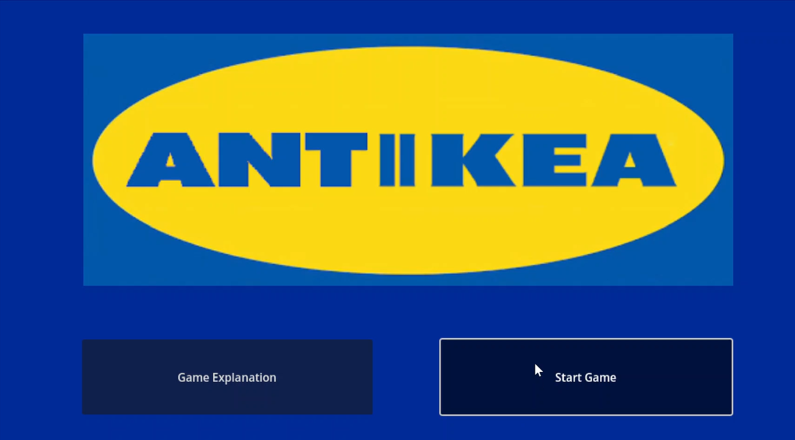
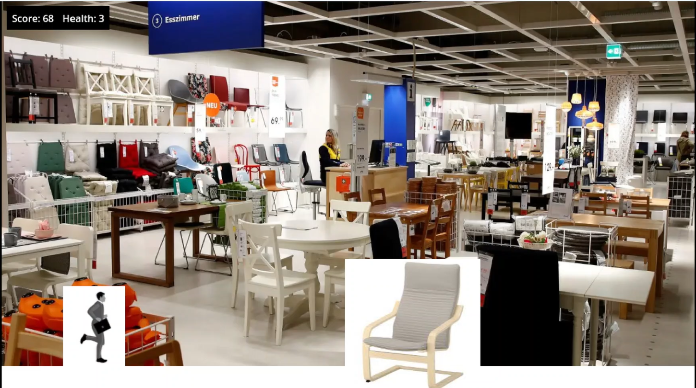

What this game is: AntIkea is a 2D endless runner game where you run through a giant department store destroying objects left and right and collecting helpful collectibles. You play as the former boss of the department store who, in his infinite wisdom, decides to destroy it after he is replaced in hopes of making the new boss look like a fool. You’ll see the game from a side perspective as your character jumps over and bashes into all of the objects coming his way. Inspired by games such as Jetpack Joyride and Subway Surfers, AntIkea is the pinnacle in department store destroying, endless running, score smashing, and replacement revenging entertainment.

How this game works: The only control used in this game is the jump button, whether that be tapping the screen on mobile or hitting the space bar on pc. The player needs to collect coins and eat food by running into them and destroy small objects like chairs by, you guessed it, running into them. The player must jump over large objects like beds and dressers though. Hitting large objects instead of jumping over them makes the player lose health and once their health is gone, they lose.

What this game will require: AntIkea is a relatively simple game in concept that has the capability to scale to so much more. This application will be made to fit any screen possible to reach the maximum amount of players from mobile to pc. AntIkea will be made with 2D gameplay in mind as this will make the game easier to develop and 2D endless runners are a very popular type of game in the modern day. The graphics it will require would simply be drawings of the character, obstacles, and backgrounds. Currently with the 2 locations in the game it uses under 15 sprites however should the game be expanded on that number would grow with about 4 sprites per level. The audio is upbeat and makes the player eager to keep going in the game to get the highest score. The major animation that is needed at the moment would be the player’s running animation as well as a scrollable background for each level. This game shouldn’t take that long to develop under optimal working conditions. With a small team of about 4-6 developers, AntIkea can easily be a reality in less than half a year. Utilizing a small team of developers means that the game’s cost shouldn’t be all that high. AntIkea will operate on a free to play system with occasional ads whenever the player loses a game. The player can alternatively purchase the right to not receive ads for only a dollar. Due to the low development cost of the game, it should be easy to make back the money invested on the game in no time. The game will be marketed to people who have played other endless runners as well as people who are fans of mobile games in general. The fast paced but short playtime per runthrough will be popular among consumers similarly to other games in the genre.